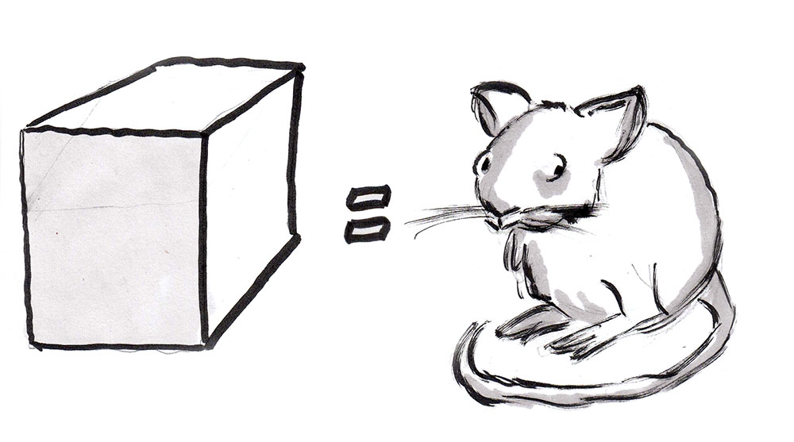
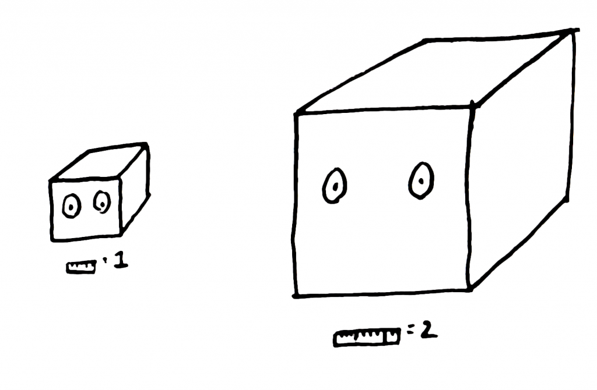

class: center, middle # EE-361 # VOLTAGE REGULATION & EFFICIENCY ## Ozan Keysan [keysan.me](https://keysan.me) Office: C-113 <span class="meta">•</span> Tel: 210 7586 --- # Voltage Regulation -- ### A transformer's ability to keep its output voltage constant. -- # Ideal transformer: ## \\(V\_{out}\\) at No Load = \\(V\_{out}\\) at Full Load -- # Practical transformer: ### \\(V\_{out}\\) under load is generally smaller than \\(V\_{out}\\) at No Load --- # Voltage Regulation ## $$\frac{V\_{2(No\;Load)}-V\_{2(Full\;Load)}}{V\_{2(Full\;Load)}}$$ -- ## Smaller regulation is better. ## Regulation of an ideal transformer = 0 --- # Voltage Regulation with Phasors <img src="./images/Transformer_equivalent_circuit_combined_no_parallel.svg" alt="Drawing" style="width: 500px;"/> ### Neglect the parallel branch (for now) --- # Voltage Regulation <img src="https://upload.wikimedia.org/wikipedia/commons/f/f5/Short_line_voltage_phasor_diagrams.png" alt="Drawing" style="width: 800px;"/> ### Regulation can be calculated at any load. --- # Voltage Regulation - ## Inductive: \\(V_{reg}>0\\) -- - ## Resistive: \\(V_{reg}>0 \\) -- - ## Capacitive: \\(V_{reg} = ?\\) --- # Voltage Regulation  --- # Voltage Regulation ### [Burdur GES](https://goo.gl/maps/JF91W3KiWgH2) -- ## [Effects to Electric Grid](https://en.wikipedia.org/wiki/Voltage_regulation), [Duck Curve](https://elements.visualcapitalist.com/the-solar-power-duck-curve-explained/) <img src="https://upload.wikimedia.org/wikipedia/commons/9/9f/Feeder_Voltage_Response_with_Advanced_VAR_Control.png" alt="Drawing" style="width: 600px;"/> --- # Example: ## For the same transformer(1000 VA) used in the previous problem, calculate the voltage regulation at: ## a) 0.8 pf lagging rated current ## b) 1.0 pf rated current ## c) 0.8 pf leading rated current ### if the output voltage of the transformer is adjusted to be 115 V, under the given load condition. ### You can ignore the parallel branch. --- # Transformer Efficiency # $$\mathrm{Efficiency (\eta) = \frac{Pout}{Pin}}$$ -- ## $$\mathrm{Efficiency (\eta) = \frac{Pout}{Pout+\mathrm{Losses}}}$$ --- # Transformer Efficiency # $$\mathrm{Efficiency (\eta) = \frac{Pout}{Pin}}$$ ## $$\mathrm{Efficiency (\eta) = \frac{Pin - Losses}{Pin}}$$ --- # Transformer Efficiency - ## Constant Losses: Core Losses (Eddy, Hysteresis) ### $$\frac{V_1^2}{Rcore}$$ -- - ## Variable Losses: Copper Losses ### $$I_1^2 (R_1 + R_2')$$ --- # Best Power Transformer - ## Efficiency as high as possible - ## Voltage Regulation close to zero - ## Minimum Cost --- # Golden Rule of Engineering Projects ## You can only pick TWO from these three! --- # Temperature Effect <img src="https://www.solara.in/cdn/shop/products/main_image_4c0c4b92-9215-46be-9d98-b5e6683d1d30.png?v=1645094643&width=1946" alt="Drawing" style="width: 400px;"/> ### How does the resistance change with temperature? --- # Temperature Effect ## Temperature Coefficient ## $$R(T) = R(T_0)(1 + \alpha\Delta T)$$ -- ## For copper α = 0.393 % per degree C ## Resistivity of copper increases by 30 % from 20 C to 100 C. --- # Losses and Cooling <img src="https://www.amesimpex.com/images/oil_cooled_002.jpg" alt="Drawing" style="width: 600px;"/> --- # Losses and Cooling: Small Transformers <img src="https://www.globalspec.com/ImageRepository/LearnMore/201210/EI-Transformer-for-Electric-Tool484de69d1e254262a778c635653aa340.png" alt="Drawing" style="width: 500px;"/> --- # Losses and Cooling: Large Transformers <img src="https://ogrforum.ogaugerr.com/fileSendAction/fcType/0/fcOid/23252098522776349/filePointer/23252098522776380/fodoid/23252098522776373/imageType/LARGE/inlineImage/true/Power-Transformer%2004.jpg" alt="Drawing" style="width: 500px;"/> --- # Losses and Cooling: Large Transformers <img src="https://upload.wikimedia.org/wikipedia/commons/8/80/Drehstromtransformater_im_Schnitt_Hochspannung.jpg" alt="Drawing" style="width: 300px;"/> --- # Losses and Cooling: Large Transformers <img src="https://upload.wikimedia.org/wikipedia/commons/thumb/a/a3/Trafostation_Alter_Hellweg_IMGP4722.jpg/1280px-Trafostation_Alter_Hellweg_IMGP4722.jpg" alt="Drawing" style="width: 750px;"/> --- <img src="https://blog.sciencescore.com/media/elephant-ears1.jpg" alt="Drawing" style="width: 850px;"/> --- <img src="./images/two-mice-shivering.png" alt="Drawing" style="width: 850px;"/> ### [Who’ll Freeze First? A Puzzle About Size and Staying Warm](https://noticing.co/on-size-and-warmth/) ---  ### [Who’ll Freeze First? A Puzzle About Size and Staying Warm](https://noticing.co/on-size-and-warmth/) ---  ### [Who’ll Freeze First? A Puzzle About Size and Staying Warm](https://noticing.co/on-size-and-warmth/) --- <img src="./images/mouse-cubing-the-cube.jpg" alt="Drawing" style="width: 750px;"/> ### [Who’ll Freeze First? A Puzzle About Size and Staying Warm](https://noticing.co/on-size-and-warmth/) ###[Size and Metobolism](https://noticing.co/on-size-and-metabolism/) --- ## (Heat \\(\propto\\) Mass, Heat Dissipation \\(\propto\\) Surface Area) <img src="https://upload.wikimedia.org/wikipedia/commons/4/43/Angry_elephant_ears.jpg" alt="Drawing" style="width: 500px;"/> ### [Square-Cube Law by Prof. Walter Lewin](http://www.youtube.com/watch?v=qoM17ikreio) ### [Square-cube law, small is mighty](https://www.youtube.com/watch?v=qzq710aOHjE) ### [Small is mighty](https://www.youtube.com/watch?v=qoM17ikreio) <!-- ## (Heat \\(\propto\\) Mass, Heat Dissipation \\(\propto\\) Surface Area) <img src="http://noticing.co/wp-content/uploads/2015/08/elephant-with-tail.gif" alt="Drawing" style="width: 500px;"/> [Small is mighty](https://www.youtube.com/watch?v=qoM17ikreio) # What about in humans? <img src="http://noticing.co/wp-content/uploads/2015/05/512px-volume_surface.svg.png" alt="Drawing" style="width: 600px;"/> # What about in humans? <img src="http://noticing.co/wp-content/uploads/2015/05/saami_family_1900.jpg" alt="Drawing" style="width: 800px;"/> # What about in humans? <img src="http://noticing.co/wp-content/uploads/2015/05/mara-young-men-jumping-2012.jpeg" alt="Drawing" style="width: 700px;"/> ### [Bermann's rule](https://en.wikipedia.org/wiki/Bergmann%27s_rule), [How insects breathe?](http://noticing.co/how-insects-breathe/) --> --- # Example: ## For the same transformer(1000 VA) used in the previous problems, calculate the efficiency at rated current and 0.8 pf lagging (assuming output voltage is 115 V). --- #Question: ## What is the point that the transformer has maximum efficiency? -- - ## Full Load / Half Load / No Load ? - ## Unity pf, lagging pf, leading pf? --- # Transformer Efficiency ## A transformer has highest efficiency while delivering unity pf --- ## A transformer has maximum efficiency when: -- ## Copper Losses = Core Losses --- ## You can download this presentation from: [keysan.me/ee361](https://keysan.me/ee361)